20 candidates for Emmet's technique library (session 3D, H-26). Each was found in your instruction books and ranked by how widely official models in the LDraw OMR join its key parts (1315 sets mined). Each picture is a render of my sketch of it in Emmet's DSL, which validates with no findings; an accepted sketch becomes the technique, with its tests and render, and a rejected one is dropped. Nothing is taken from the models' files or the books' pages (D-48). Every candidate starts as Accept: switch the ones you don't want, add a note if it helps, then copy your answers and paste them to Claude.
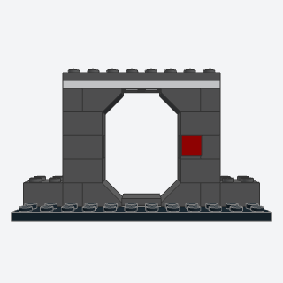
chamfered_door_portala sci-fi doorway with cut corners, an opening 4 studs wide in a wall 2 studs thick.
The standard sci-fi doorway, 4 studs wide in a wall 2 thick; an agent reaches for it at every door of a station, ship interior, or corridor.
Note: Leaves the opening open (no door part); a sliding door could go in later.
x, y, z, height, color, trim, light, titlebatch-17/chamfered_door_portal.py3039 + 3660b + 87087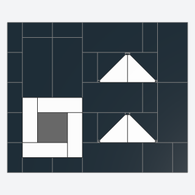
hangar_chevron_floora smooth black hangar deck, fully tiled, with white chevrons down its middle and a framed lift pad.
A finished sci-fi deck for hangars and landing bays: fully tiled, with markings that say where ships go and a lift pad.
Note: Chevrons are two triangular tiles per 2 x 2 square (marking and deck color) instead of printed tiles. Variant of tiled_floor with markings.
x, y, z, length, depth, chevrons, lift, color, marking, pad, titlebatch-17/hangar_chevron_floor.py35787 + 63864 + 87079 (some of its parts weren't confirmed from the book; I'd pin them when writing it)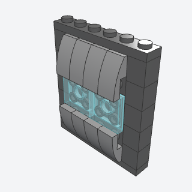
recessed_glow_panela glowing light panel set between two curved lips on a hull wall, all on side studs.
Lights a hull or wall face: a glowing panel set between curved lips, all on side studs, for ships, stations, and engine bays.
Note: The book frames a curved printed glow panel; this uses plain 2 x 2 tiles in Trans-Light Blue (the 2 x 4 tile was never made in it) and curved slopes 2 x 1 hung vertically as lips. The lower lip needs the 5-plate side-stud brick (22885): a curved slope's thin end is where it takes a side stud.
x, y, z, width, color, lip, glow, titlebatch-17/recessed_glow_panel.py22885 + 11477 + 3068b (some of its parts weren't confirmed from the book; I'd pin them when writing it)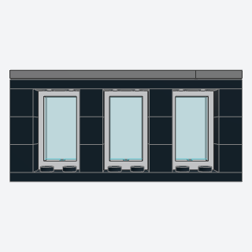
lit_window_panela sci-fi wall of tall pale-blue light panels between dark pillars, a gray rail along the top.
Makes a dark sci-fi room glow: tall pale-blue windows between black pillars, for corridors, throne rooms, and control rooms.
x, y, z, bays, frame, pillar, glow, rail, titlebatch-17/lit_window_panel.py60593 + 60602 + 3004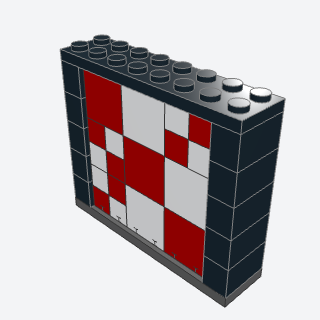
checker_light_walla control wall of red and white light squares in a black frame, a tiled plate stood upright on side studs.
A busy control or detention wall in two light colors, a tiled plate stood upright on side studs; a cheap way to fill a sci-fi wall.
Note: The lights panel is a submodel built flat and placed with Rot(x=90); the backing's 5-plate side-stud bricks match a plate's stud pitch, so every anti-stud is held.
x, y, z, width, height, seed, frame, lights, titlebatch-17/checker_light_wall.py22885 + 3068b + 3070b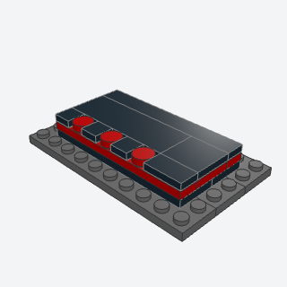
glow_trim_edgea dark platform with a thin lit line all round its edge and indicator lights along its front.
A lit line round a platform or dais edge, with indicator lights, for command decks, thrones, and landing pads.
Note: Built as a whole platform (three plate courses, the middle one's ring in the glow color) rather than a trim added to an existing edge.
x, y, z, length, depth, spacing, color, glow, titlebatch-17/glow_trim_edge.py98138 + 3710 + 3666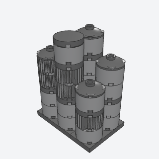
pipe_column_clustera bank of big round pipes or reactor columns of uneven heights, banded and capped, packed side by side.
Banks of big pipes or reactor columns that make an engine room, reactor, or industrial corner look busy.
Note: Variant of greeble_strip as a column cluster. The book's biggest pipes use curved panels (6059); left out.
x, y, z, cols, rows, height, seed, color, band, cap, titlebatch-17/pipe_column_cluster.py3941 + 92947 + 4032b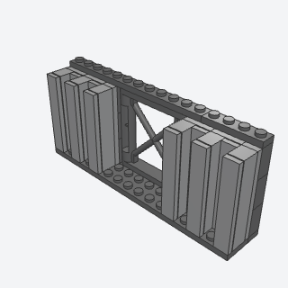
ribbed_side_panela big flat wall face cut by deep vertical grooves, built flat and stood on side studs, with girder panels between as framed openings.
Big flat walls with depth for platforms, hangars, and station sides: deep vertical grooves, girder bays between.
Note: Variant of snot_panel. The book steps its courses with plates and hangs the slab on brackets; this builds the ribs as bricks capped with tiles on a plate and hangs it on 5-plate side-stud bricks.
x, y, z, panels, width, height, girders, color, backing, titlebatch-17/ribbed_side_panel.py22885 + 64448 + 3009 (some of its parts weren't confirmed from the book; I'd pin them when writing it)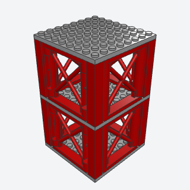
lattice_towera tall open steel tower of stacked modules, each a deck, corner posts, X-braced girder faces, and a ribbed core.
A repeatable tower module for launch towers, cranes, masts, and pylons: deck, corner posts, X-braced faces, ribbed core.
Note: The research's grid fallback: X-braced girder panels (64448) for the faces instead of bars in clips at 45 degrees, and plain 8 x 8 decks instead of plate rings. Every module is the same; the book varies the bracing.
x, y, z, levels, core, color, core_color, deck, titlebatch-17/lattice_tower.py64448 + 2453b + 2877 + 41539 (some of its parts weren't confirmed from the book; I'd pin them when writing it)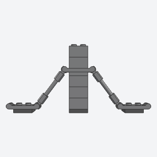
bar_truss_bracethin diagonal struts from ground anchors up to a tower leg, each a bar with a clip at both ends snapped onto handles, so every brace makes a triangle.
Thin diagonal struts that brace a tower leg or frame, for launch towers, cranes, and gantries.
Note: Fixed angle by design: two bar holders with clips (11090) and a bar 3L make exactly 100 LDU between handles, and the only grid spacing that matches is 3 studs by 10 plates (a 3-4-5 triangle, about 53 degrees). Struts are placed with add_raw; the validator connects both clips. A plate with one handle (2540) as the ground anchor collides with the clip near the handle's end support, so both anchors are double-handle plates (18649) with the clip at the handle's middle.
x, y, z, sides, rows, color, strut, titlebatch-17/bar_truss_brace.py11090 + 87994 + 18649 (some of its parts weren't confirmed from the book; I'd pin them when writing it)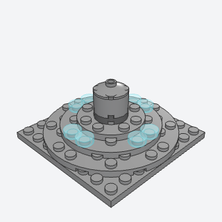
round_deck_domea low stepped dome or bridge on top of a disc or hull, round plates of shrinking size stacked on one center.
A low stepped dome or bridge on top of a disc, saucer, or hull deck.
x, y, z, size, tower, color, trim, lights, titlebatch-17/round_deck_dome.py11213 + 60474 + 4740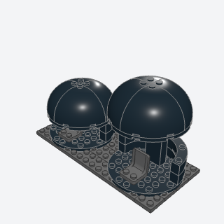
clamshell_poda dark round pod with a seat inside, open at the front, whose domed cap lifts on a post to let a figure in.
A pod, escape capsule, or meditation chamber a figure sits in, with a cap that lifts.
Note: Simplified: the book's petals on hinges are left out (the front stays open), and the cap's lift is two fixed poses: closed on a short post, lifted on a 1 x 2 x 5 brick. The example shows both.
x, y, z, lifted, color, seat, titlebatch-17/clamshell_pod.py49612 + 48092 + 74611 + 2454b (some of its parts weren't confirmed from the book; I'd pin them when writing it)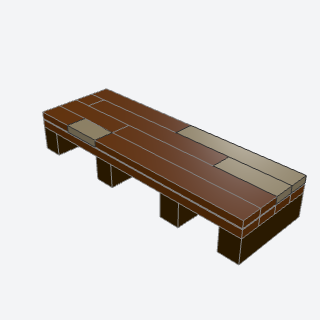
plank_decka wooden deck or floor of long boards with staggered butt joints, laid over plates on cross beams.
A wooden deck or floor of staggered boards on beams, for ship decks, piers, cabins, and taverns.
Note: Variant of tiled_floor (a planks mode with staggered joints) merged from the MS plank_deck_tiles and FM plank_deck_and_beams entries.
x, y, z, length, width, beam_every, seed, bare, planks, beam, titlebatch-17/plank_deck.py2431 + 6636 + 4162 + 3070b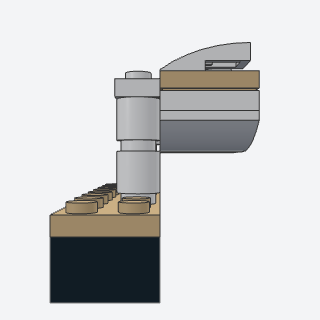
davit_lifeboata small double-ended boat hanging outboard beside a ship's deck from two curved davits.
Small boats hanging beside a ship's deck, for steamers, liners, and expedition ships.
Note: Grid davits: a post of round bricks, a 1 x 3 plate arm, and a curved slope as the bent head, with the boat pressed onto the arms' undersides. The book bends bars in clips for the davits.
x, y, z, color, cover, davit, titlebatch-17/davit_lifeboat.py32803 + 3623 + 11477 + 3062b (some of its parts weren't confirmed from the book; I'd pin them when writing it)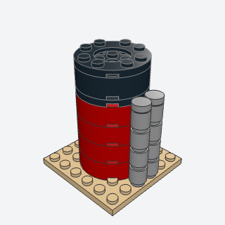
round_funnela tall round ship's funnel or chimney of 4 x 4 round bricks, a dark band at the top, steam pipes up its side.
A round ship's funnel or industrial chimney with a dark top and steam pipes.
Note: Variant of chimney_stack and exhaust_stack (round, 4 x 4). The book's steam pipes are curved bars; these are round 1 x 1 brick columns.
x, y, z, height, pipes, color, band, pipe_color, titlebatch-17/round_funnel.py87081 + 11833 + 60474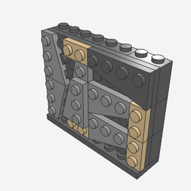
rock_mosaic_panela sheer cliff face of interlocking wedge facets with tan strata, built flat and hung upright on side studs.
A sheer faceted cliff or rock spur face with strata, for fantasy cities, mountains, and cave walls.
Note: Variant of rock_facet: a seeded mosaic of wedge plates built flat (a submodel) and hung upright on 5-plate side-stud bricks. The panel's studs face out, as in the book.
x, y, z, width, height, seed, color, shadow, strata, titlebatch-17/rock_mosaic_panel.py41769a + 41770a + 43722a + 43723a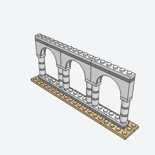
double_arch_colonnadean open arcade of tall arches on slender round columns, paired where two arches meet, with a cornice line over them.
An open arcade of tall arches on slim columns, for cloisters, palaces, and white fantasy cities.
Note: Variant of brick_built_arch. Straight runs only; the book's hidden side-stud brick for arches meeting at a corner is left out.
x, y, z, bays, height, color, trim, titlebatch-17/double_arch_colonnade.py15254 + 3062b + 3023b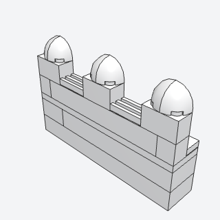
fin_merlon_crenelsbattlements whose merlons are thin rounded fins, not square blocks, with grille tiles in the crenels.
Battlements with rounded fin merlons, for fantasy and elven walls where square merlons look too plain.
Note: Variant of battlements. The book clips curved slopes onto bars to make each fin; this tops a 1 x 2 brick with two quarter domes (5848) back to back on the grid, so the fins are 2 wide and round to the front.
x, y, z, length, rise, color, tie, titlebatch-17/fin_merlon_crenels.py5848 + 2412b + 3004 (some of its parts weren't confirmed from the book; I'd pin them when writing it)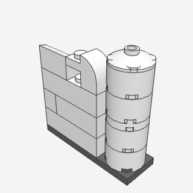
round_bastiona short round pier with a smooth face, for the rounded end of a wall run or a slim tower, 2 studs across.
A slim round pier or the rounded end of a wall run, for fantasy walls and small towers too narrow for round_tower.
Note: Variant of round_tower at 2 x 2.
x, y, z, rows, wall, dome, color, titlebatch-17/round_bastion.py6143 + 4032b + 6091 + 37352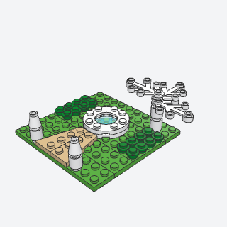
fountain_courta small walled-city courtyard at mini scale, a round fountain at its heart, low hedges, a tapering stone path from the gate, and a white tree.
A mini-scale courtyard with fountain, hedges, path, and tree, for walled cities and palace gardens seen from far off.
Note: Variant of pond and flagstone_paving at mini scale. The white tree is leaves 4 x 3 (2423) in white on round bricks rather than bars and flower stems (the stems weren't made in white).
x, y, z, tree, lawn, hedge, stone, path, titlebatch-17/fountain_court.py11833 + 98138 + 41769a + 41770a (some of its parts weren't confirmed from the book; I'd pin them when writing it)